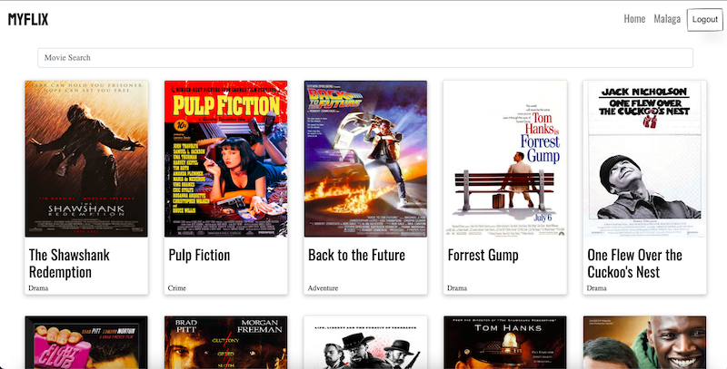
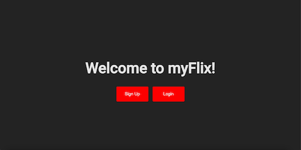
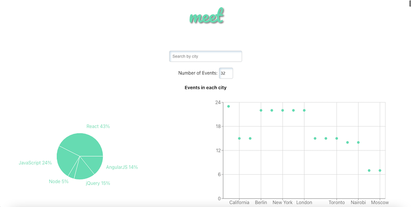
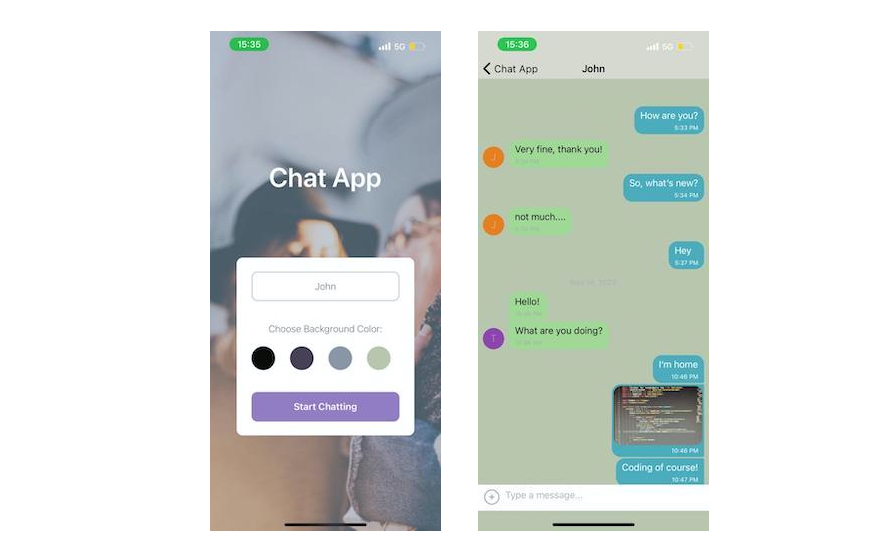

Projects
Portfolio website

HTML, CSS | JavaScript | Bootstrap
About
My personal single-page portfolio website. Includes information about my projects, my cv and my skills. Written using HTML, CSS, Bootstrap 5 and JS. The website features smooth transitions, some animations, responsive design and modals with swipe function for mobile devices.
Pokedex

HTML, CSS | JavaScript | Bootstrap | Pokémon API | Ajax
About
This is a small web application built with HTML, CSS, and JavaScript that loads data from an external API and enables the viewing of data points in detail. When a Pokemon is clicked, the image, height, weight and type characteristics of the Pokemon appears on a modal. Alternatively, pokemons can be searched by typing the pokemon name in the search bar. This modal can then be closed by clicking on the "Close" button, pressing the escape key or clicking outside the modal.
Features
The app loads data from an external API.
The app displays a list of items loaded from that API
after the page is loaded.
The app enables the viewing of more details for a
given list item (like a Pokémon) on demand, such as
when clicking on a list item.
The app has CSS styling.
The JavaScript code is formatted according to ESLint
rules.
The JavaScript code is formatted via Prettier.
The uses at least one additional complex UI pattern,
such as a modal, for details or touch
interactions.
The app allows searching for items (e.g., searching
for Pokémon).
The app does not throw any errors when being
used.
The app is deployed to a publicly accessible
platform like GitHub Pages.
The app works in Chrome, Firefox, Safari, Edge, and
Internet Explorer 11.
Movie database API

JavaScript | Node.js | Express | MongoDB | Mongoose | Postman | Heroku
About
The server-side component (REST API) of a “movies” web application. The application provides users with access to information about different movies, directors, and genres. Users can sign up, update their personal information, and create a list of their favorite movies. The REST API can be accessed via commonly used HTTP methods like GET and POST. Similar methods (CRUD) are used to retrieve data from database and store that data in a non-relational way.
Features
Return a list of ALL movies to the user
Return data (description, genre, director, image URL,
whether it’s featured or not) about a single movie by
title to the user
Return data about a genre (description) by name/title
(e.g., “Thriller”)
Return data about a director (bio, birth year, death
year) by name
Allow new users to register
Allow users to update their user info (username,
password, email, date of birth)
Allow users to add a movie to their list of
favorites
Allow users to remove a movie from their list of
favorites
Allow existing users to deregister
myFlix React client
React | React Redux | Bootstrap | Parcel | Axios
About
The client-side for an application built using React called myFlix based on its existing server-side code (REST API and database). The end result is fully-functioning application built with the MERN stack.
Features
Returns a list of ALL movies to the user (each listed item with an image, title, and description)Sorting and filtering
Ability to select a movie for more details
Returns data (description, genre, director, image) about a single movie to the user
Allows users to add a movie to their list of favorites
Allows users to log in with a username and password
Allows new users to register (username, password, email, birthday)
Returns data about a genre, with a name, description and other movies
Returns data about a director (name, bio, birth year and other movies)
myFlix Angular client
TypeScript | Angular | Angular Material
About
The client-side for an application called myFlix built with Angular and based on its existing server-side code (REST API and database), with supporting documentation.
Case Study
Features
App displays a welcome view where users are able to either log in or register an account.Once authenticated, the user can now view all movies.
User can add or delete a movie to/from favorite movie list.
A profile view button which when user clicks, can see, edit and delete profile, log out or come back to movie list.
Upon clicking on a particular movie, users are taken to a single movie view, where additional movie details are displayed. The single movie view contains the following additional features:
○ A button that when clicked takes a user to the director view, where details about the director of that particular movie are displayed.
○ A button that when clicked takes a user to the genre view, where details about that particular genre of the movie are displayed.
Meet App
React | Jest | AWS | Google Calendar API | Recharts | Axios
About
A serverless (AWS lambda), progressive web application (PWA) written with React using a test-driven development (TDD) technique. The application allows users to search for a city and get a list of CareerFoundry events hosted in that city. It uses the Google Calendar API to fetch upcoming events and has data visualization.
Features
Filter events by city
Show/Hide event's details
Specify number of events
Use the app when offline
Data visualization
Chat App
React Native | Expo | Google Firestore
About
Simple native mobile chat app with login, one chat room, picture and location attachement functions. The app provides users with a chat interface and options to share images and their location. App is written with React Native, Expo, and Google Firestore Database.
Features
A page where users can enter their name and choose a
background color for the chat screen before joining
the chat.
A page displaying the conversation, as well as an
input field and submit button.
The chat provides users with two additional
communication features: sending images, making photos
and location data.
Data gets stored online and offline.
Tech Skills
My tech skills
Wed dev languages and tech
HTML | CSS(SCSS) | JavaScript | TypeScriptJS tech, libraries and frameworks
React | Angular | React Native | Node.js | Jest |JQuery | Axios | Parcel | Express
Databases
SQL | MongoDB | PostgreSQL | Google Firestore | PostmanHosting and deployment
AWS | Github | Expo | Heroku | Netlify | CyclicAbout Me
Hi, my name is Vitaliy Porsnev,
and I am a full stack web developer with a diverse background in warehousing, sales, and restaurant management. My passion for technology, design, and the internet has led me to pursue a career in web development.I am highly motivated and dedicated to constantly improving my skills. I have already had the opportunity to work on various projects using technologies such as HTML, CSS, JavaScript, React, Angular, and Node.js.
In addition to my professional pursuits, I am also deeply committed to sustainability and enjoy a variety of hobbies, including DIY furniture building, drawing, cooking, and photography. In my free time, I also like to stay informed about the latest advancements in technology, mobility, design, and business.
Thank you for visiting my website, and I hope you find my work interesting and inspiring. If you have any questions or would like to work together, don't hesitate to reach out.
Contact me
Education
Business Management and Administration
Vilnius UniversityVilnius, Lithuania
CareerFoundry Full Stack Web Development course
CertificatesWork Experience
Chef De Rang
Hilton Munich Park - Munich, Germany - 06.2018 – 09.2022
- Consistently met and exceeded customer expectations by
providing
exceptional service and managing the team.
- Regularly trained and coached team members and trainees,
resulting
in a motivated and high-performing team.
Restaurant Manager
Juta Jazz Kava - Vilnius, Lithuania - 10.2017 – 04.2018
- Achieved successful operations, good reviews, and high
revenues by
carrying out shift service supervision, guest relations,
reservations management, invoice issuing, event preparations,
and
managing and coaching a team of up to 20 colleagues.
Waiter/ Head waiter/ Restaurant Manager
Nordic Entertainment - Vilnius, Lithuania - 05.2014 –
09.2017
- Constantly demonstrated my dedication, high service standards,
and
leadership skills, resulting in rapid career growth.
- Accomplished successful restaurant operations, increase in
positive reviews, and high revenues through effective management
of
shift service supervision, guest relations, reservations
management,
invoice issuing, social media management, HR, event
preparations,
and team training.
Sales Representative
Portus Logistika - Vilnius, Lithuania - 09.2013 – 01.2014
- Contributed to the growth of revenue by conducting
yellow-pages
research, making a minimum of 60 cold calls per day, and
sending email offers to potential clients in the Kazakhstan
region.
Warehouse Worker/Manager
Komandor - Vilnius, Lithuania - 05.2012 – 09.2013
- Ensured efficient warehouse operations by managing the
preparation
and dispatch of orders to clients and the delivery team.
- Implemented a new stock control system using spreadsheets and
optimized storage, streamlining operations and improving
efficiency.
Languages
Russian – native
English – C1
German – B2